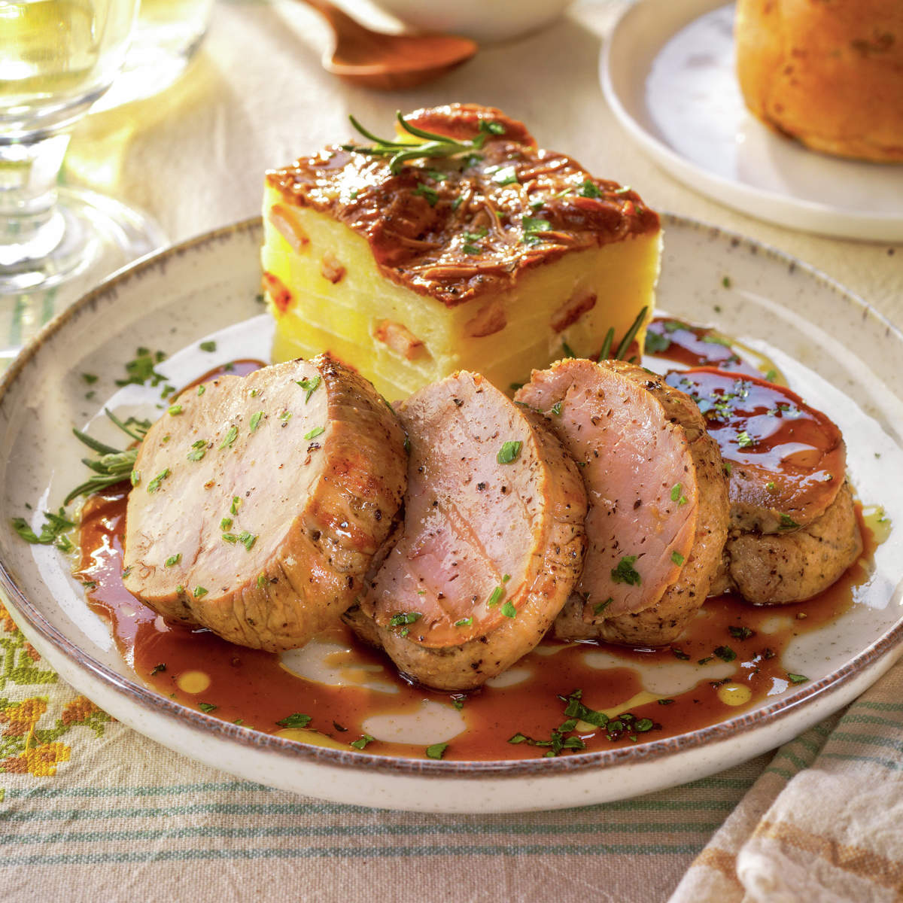
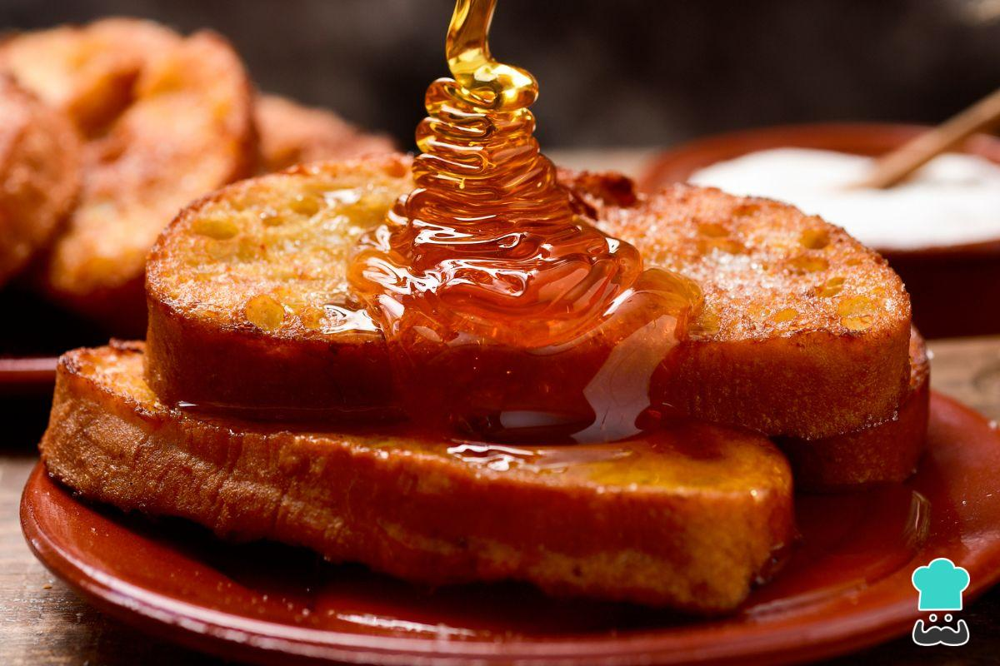
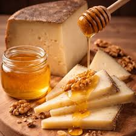
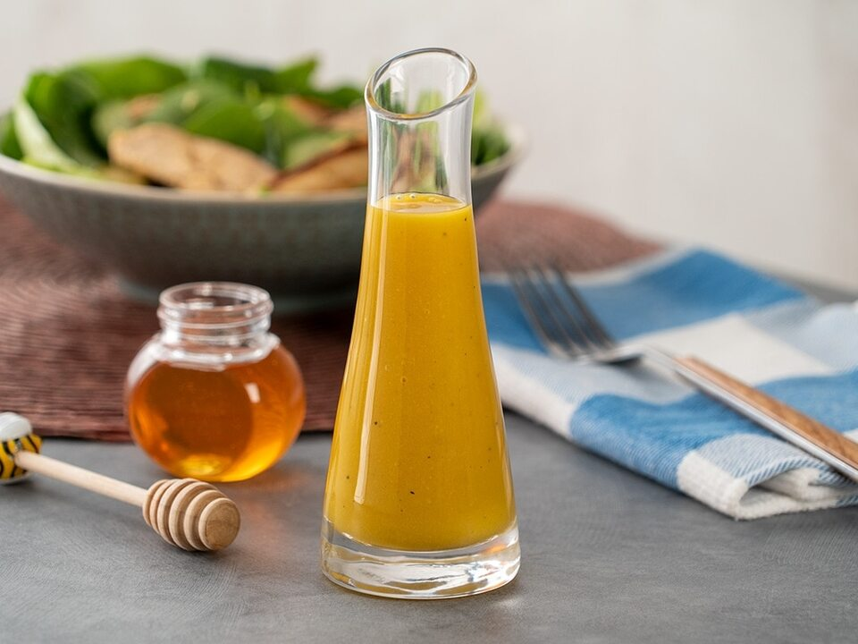
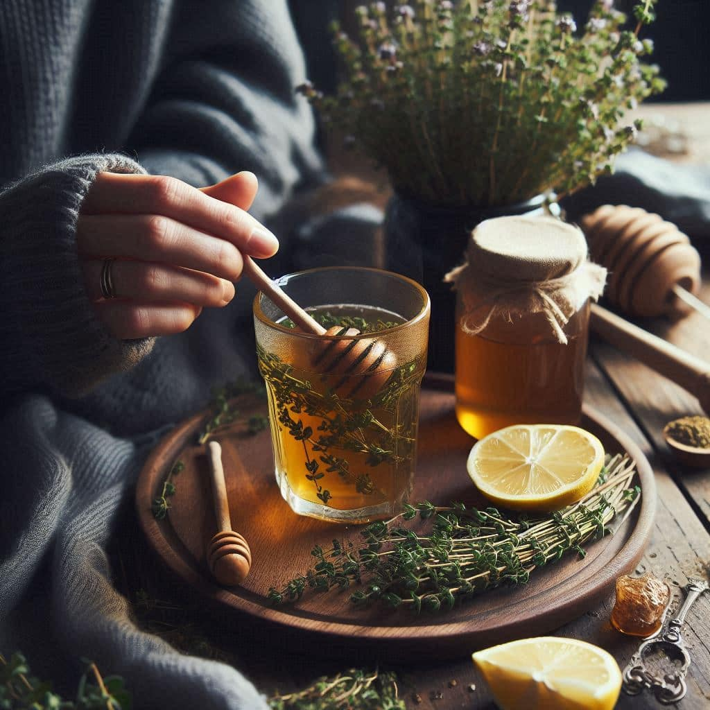

En la cocina

Recetas con miel de retama
Su sabor peculiar, con ese toque salado, la hace ideal tanto en recetas dulces como en combinaciones saladas.
🥩
Solomillo a la miel de retama

Un plato espectacular donde el dulce y salado se fusionan.
- 1 Sella el solomillo a fuego fuerte en sartén con aceite y sal.
- 2 Retira la carne y en la misma sartén añade 3 cdas. de miel.
- 3 Agrega un chorrito de salsa de soja y pimienta negra.
- 4 Devuelve la carne y glasea 2 minutos a fuego suave.
- 5 Deja reposar 3 minutos antes de servir.
🍞
Torrijas con miel de retama

El postre tradicional extremeño con el toque dorado de la retama.
- 1 Empapa rebanadas de pan del día anterior en leche con canela.
- 2 Pásalas por huevo batido y fríe en aceite bien caliente.
- 3 Escurre sobre papel absorbente.
- 4 Riega con miel de retama generosamente antes de servir.
🧀
Queso extremeño con miel y nueces

El clásico de la tierra, elevado.
- 1 Corta lonchas de queso de oveja curado.
- 2 Colócalas en tabla de madera con nueces.
- 3 Rocía con miel de retama generosamente.
- 4 Añade un hilo de aceite de oliva virgen extra.
🥣
Yogur con miel y frutos secos
El desayuno perfecto para empezar con energía.
- 1 Vierte yogur natural en un bol.
- 2 Añade una cucharada generosa de miel de retama.
- 3 Incorpora almendras, nueces o pistachos.
- 4 Opcional: canela o copos de avena por encima.
🥗
Vinagreta de miel para ensalada

El aliño que transforma cualquier ensalada en algo especial.
- 1 Mezcla 2 cdas. de miel de retama con 1 cda. de mostaza Dijon.
- 2 Añade 3 cdas. de aceite de oliva virgen extra.
- 3 Incorpora 1 cda. de vinagre de manzana y una pizca de sal.
- 4 Ideal con rúcula, nueces y queso fresco.
☕
Infusión de tomillo con miel

El remedio de toda la vida para el invierno.
- 1 Hierve agua e infusiona tomillo fresco 5 minutos.
- 2 Espera a que baje un poco la temperatura.
- 3 Añade una cucharadita de miel de retama.
- 4 Unas gotitas de limón para potenciar el efecto.